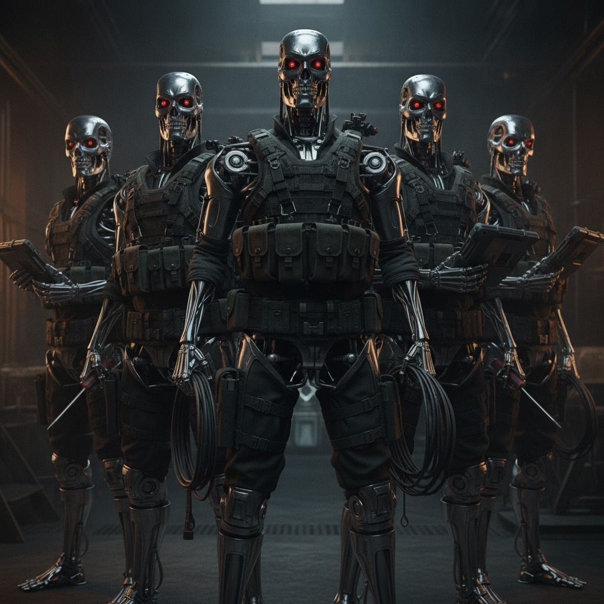

Lecture 4: Agents
The Scenario
Make a financial analyst agent. It can get stock prices from a fixed universe, compute metrics on those stocks, and analyze a portfolio’s historical performance.
The Task
Build a PydanticAI financial analyst agent with:
- Data collection tools — pull real prices from Yahoo Finance
- Individual stock analysis tools — metrics like returns, CAGR, Sharpe ratio, and max drawdown
- Portfolio analysis tools — historical performance of the whole book
Stock universe (stay inside this list): AAPL, MSFT, NVDA, GOOGL, AMZN, META, TSLA, JPM, BAC, GS.
Wrap the agent in a nice Dash chatbot app.
Portfolio file: portfolio.json
Harness checklist:
- Tools — the list above
- Memory — chat history + current portfolio state
- Stopping Rules — clear finish / max-step cutoff so it cannot loop forever
- Guardrails — universe allow-list; no inventing prices; refuse unsafe asks
- Audit trail — forensic log of thoughts, tool calls, observations
Install tip: if you use PydanticAI, put
pydantic-ai-slim[openai] in requirements.txt
(not full pydantic-ai). The full package pulls Anthropic, Google,
MCP, Logfire, and dozens of extras you do not need for Portkey/OpenAI — installs
get huge and often stall. Slim is enough for this vibe.
Dash tip: run with use_reloader=False (or debug off) so one
edit doesn’t spawn many servers, and when stopping the app, kill the whole process — not
only whatever is on the port.
Dash tip (ports): Codex may leave orphan servers on the same port.
Before starting the app again, free the port (PowerShell; change 8050 if yours differs):
netstat -ano | findstr :8050
taskkill /PID <pid> /F
Dropbox / OneDrive: pause syncing (or exclude .venv)
while you create the virtualenv and run pip install. Live sync during
the install often breaks the venv.